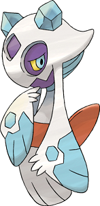

Alors qu'une effroyable tempête sévissait sur la forêt, le bûcheron Mosaku et son apprenti Minokichi, âgé de 18 ans, se réfugièrent dans une petite cabane au milieu de la forêt. Pendant la nuit, le feu dans la cheminée s'éteignit et le froid réveilla Minokichi. C'est alors qu'il vit dans la petite pièce une jeune femme d'une grande beauté et vêtue d'un kimono blanc ; elle avait la peau d'une blancheur irréelle, de longs cheveux noirs et des lèvres bleues. Quand elle marchait, elle semblait glisser au-dessus du sol. Elle se pencha sur le vieux bûcheron et lui souffla son haleine glaciale au visage. Puis elle se retourna vers le jeune homme qui était tétanisé par la peur, mais elle fut prise de pitié devant son jeune âge ou sa beauté juvénile et lui dit : « Je ne vous tuerai point si vous promettez de ne jamais raconter ce que vous avez vu ce soir. » Le lendemain matin, Minokichi se réveilla et se rendit compte du décès de son maitre mais il n'aurait su dire si, pendant cette terrible nuit, il avait rêvé ou pas. Plus tard, le jeune apprenti rencontra une jeune fille fort belle qui se nommait Oyuki (yuki signifiant « neige ») et qu'il ne tarda pas à épouser. Ils eurent de nombreux enfants et passèrent de merveilleuses années ensemble. Un jour, alors qu'il la regardait coudre, il lui raconta l'histoire de cette étrange nuit où il avait rêvé ou réellement rencontré une femme aux pouvors surnaturels. Yuki-onna, car c'était elle, se mit en colère et l'abandonna ; elle épargna sa vie en raison de leurs enfants mais elle lui promit de venir le châtier s'il n'était pas un bon père pour eux puis elle se transforma en une sorte de brouillard blanc et disparut par le trou de la cheminée.
Voici l'histoire de la Yuki Onna :
Mythe original :

Interprétation dans la pop culture :
C'est cette légende qui a inspiré Game freak pour créer le Pokémon Momartik. C'est un Pokémon Glace/Spectre ce qui reflète bien les deux aspects de la Yuki-onna. Il est dit dans le Pokedex qu'" On dit qu'il apparaît dans les zones habitées les soirs de tempête de neige. Si vous entendez toquer à la porte, n'allez pas ouvrir !"